第二章 到认识Megui
本章主要介绍Megui的界面以及其用法
本章共 字
预计阅读时间 min
2.0 准备
- Megui 64位 (如果你电脑是32位的请下载32位的)
2.1 Megui
Megui是一个带有图形化界面的命令行工具集。其功能比小丸强大，压制质量也较高，但操作比较麻烦。
除了本体之外，大部分工具需要在Megui里面进行下载
标注为粗体的为建议下载，标注为高亮的为必须下载
| 名称 | 功能 |
|---|---|
| AVI-Mux GUI | 将多个视频流，音频流，字幕流合并进一个视频文件已停止开发 |
| AviSynth | 用于AVS的预览以及压制 |
| Besplit | 音频流剪切以及修复 |
| DGIndex | 为AviSynth滤镜DGdec建立MPEG流媒体索引 |
| eac3to | 全称encode AC3 to，即转换AC3格式的工具。 |
| FFMpeg | 几乎全能的工具 |
| FFMS | FFmpegSource，跨平台的FFMPEG库，Avisynth滤镜以及索引多媒体 |
| FLAC | flac解编码器 |
| Haali Media Splitter | Mkv剪切工具 |
| LAME | MP3解编码工具 |
| L-SMASH Works | AviSynth滤镜，用于加载多媒体源 |
| MediaInfo | 查看多媒体信息 |
| mkvmerge | 合并多轨mkv |
| MP4Box | 专业的MP4封装工具 |
| NeroAacEnc | 解编码AAC音频流 |
| OggEnc | 编码Ogg文件 |
| Opus | 解编码Opus音频流 |
| PgcDemux | 用于解封装DVD里面的文件(VOB IFO ac3 dts) |
| tsMuxeR | 封装MPEG-ts流文件 |
| VobSub Ripper | 解析DVD中的字幕文件 |
| x264 | H.264/MPEG-4 AVC解编码器 |
| x265 | H.265/HEVC解编码器 |
| XviD | XviD解编码器 |
2.2 Megui的界面
emmmm……
要说的东西有点多
2.2.1 主界面
请注意图片中的值不一定是最好的
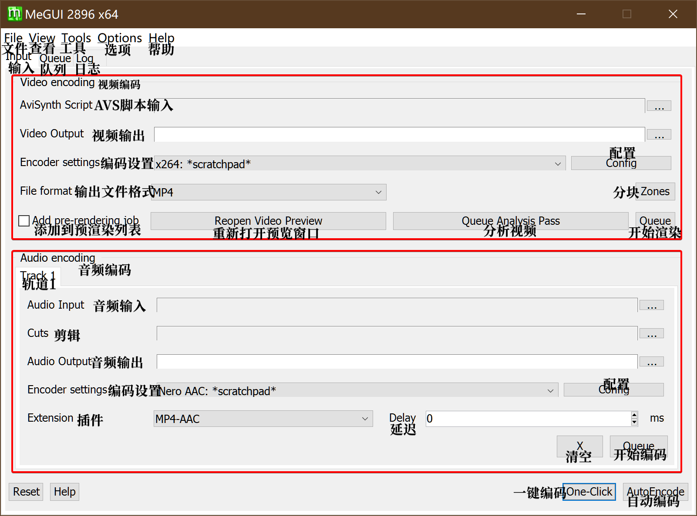
你可以看到输入区主要分为两块，视频输入与音频输入
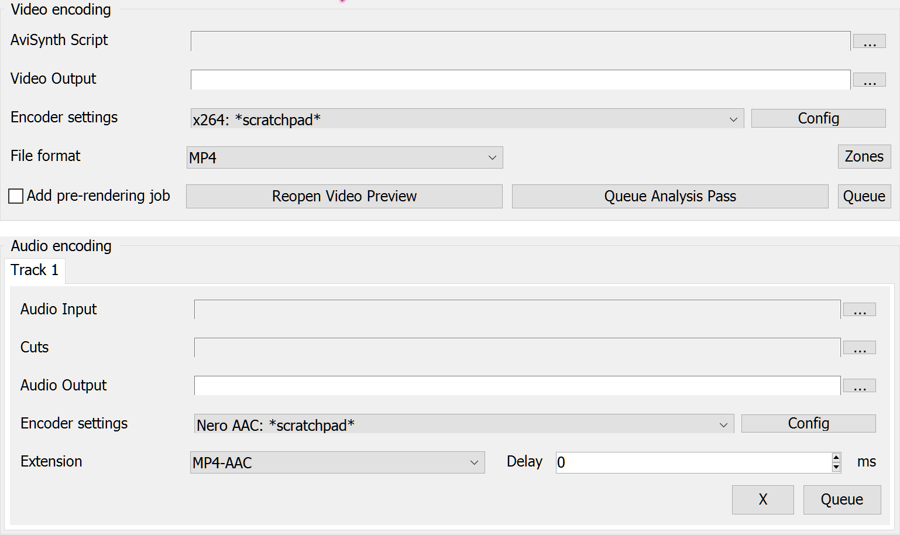
2.2.1.1 视频输入区
先来讲讲视频输入区
AviSynth Script: 这里用于插入AVS脚本文件，你可以像小丸一样把avs拖进去，他会自动进行检测，如果没有错误的化他会打开一个预览窗口
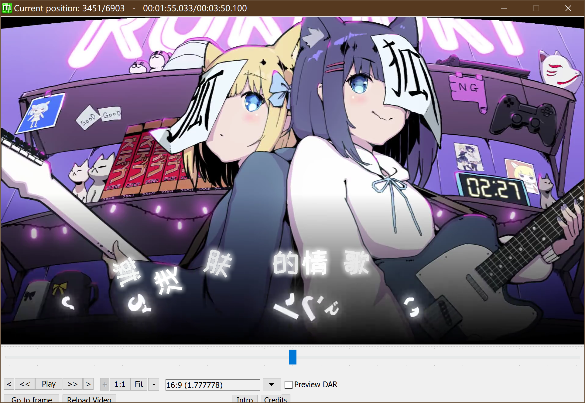
你可以拖动进度条来查看有没有挂上mod或者脚本有没有写漏的
如果确认无误之后右上角关闭就好
Video Output: 视频输出的位置
Encoder settings: 编码器设置
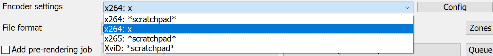
你们可能会没有第二个，第二个是我自己的预设，稍后会讲如何储存编码器预设，右边的Config是设置。
2.2.1.2 音频输入区
在频频输入区你可以选择把音频文件拖进去，也可以输入avs脚本
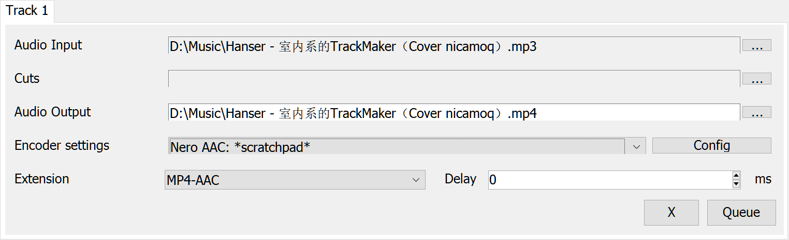
上面的track选项卡，是当你需要输出mkv的时候才会出现多track的情况，一般用不到。
重复的略过
Cuts: 输入Megui的cut记录文件，可以在菜单栏的Tools-Audio Cut来创建cut记录文件
编码器设置
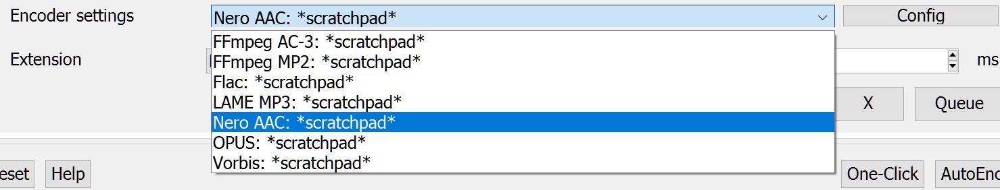
你们的也许和我的有所不同，可能会少一点，但是我们主要用到的就是Nero AAC或者QAAC，右边的Config是编码选项
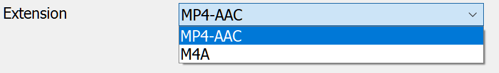
这里是输出格式，一般选择MP4-AAC
2.2.2 X264设置界面
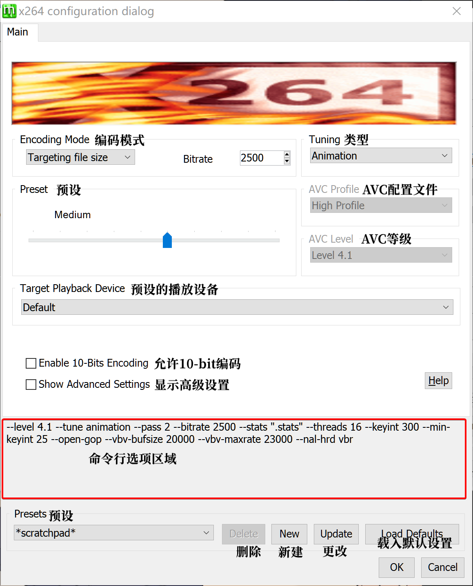
这是点开config之后的界面，你们的或许和我的有些不同。现在仅作介绍，里面的参数起什么作用，会在压制这一章说
勾选了“显示高级选项之后”
也许界面略有不同，但是你会发现多出来一堆东西
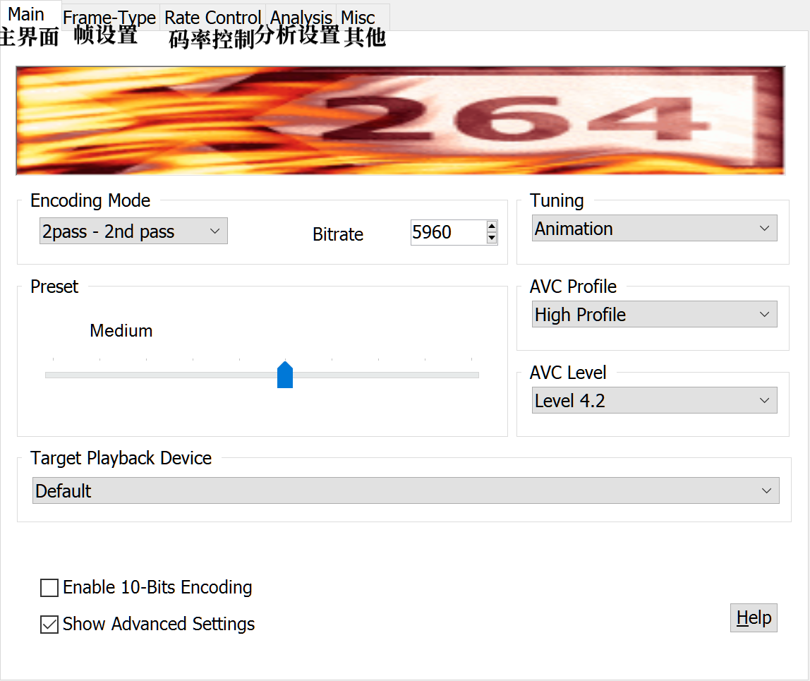
2.2.2.1 帧设置
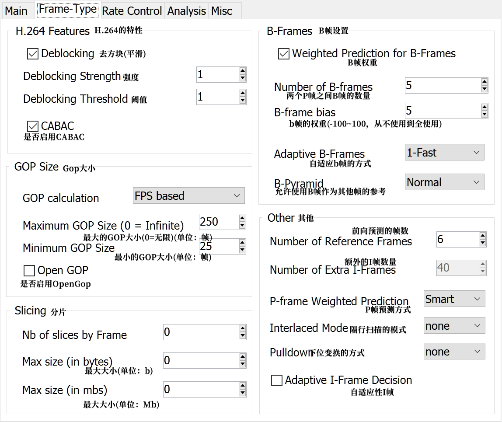
2.2.2.2 码率控制
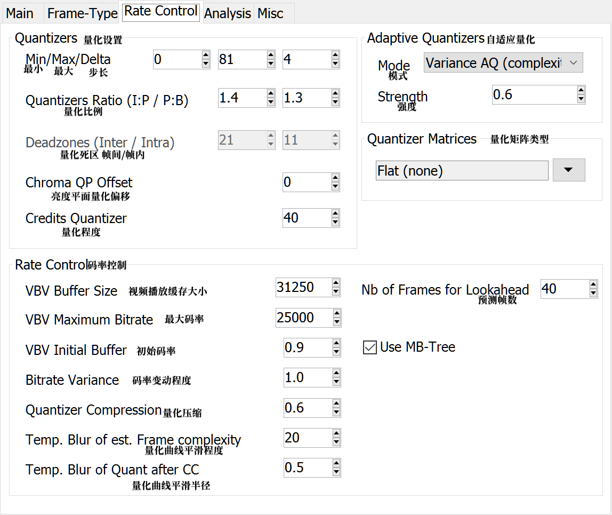
2.2.2.3 分析
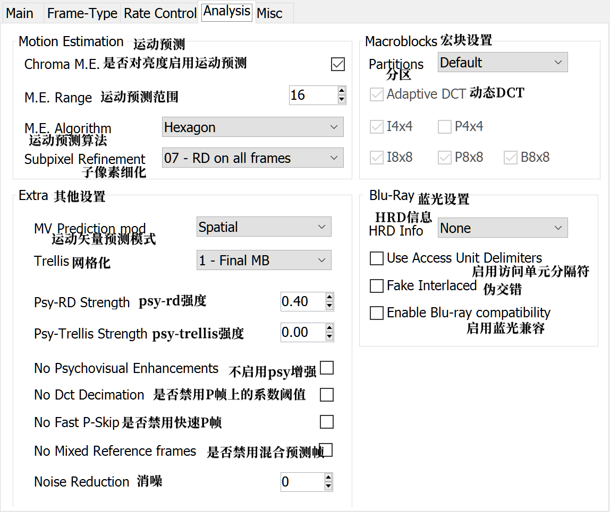
2.2.2.4 其他
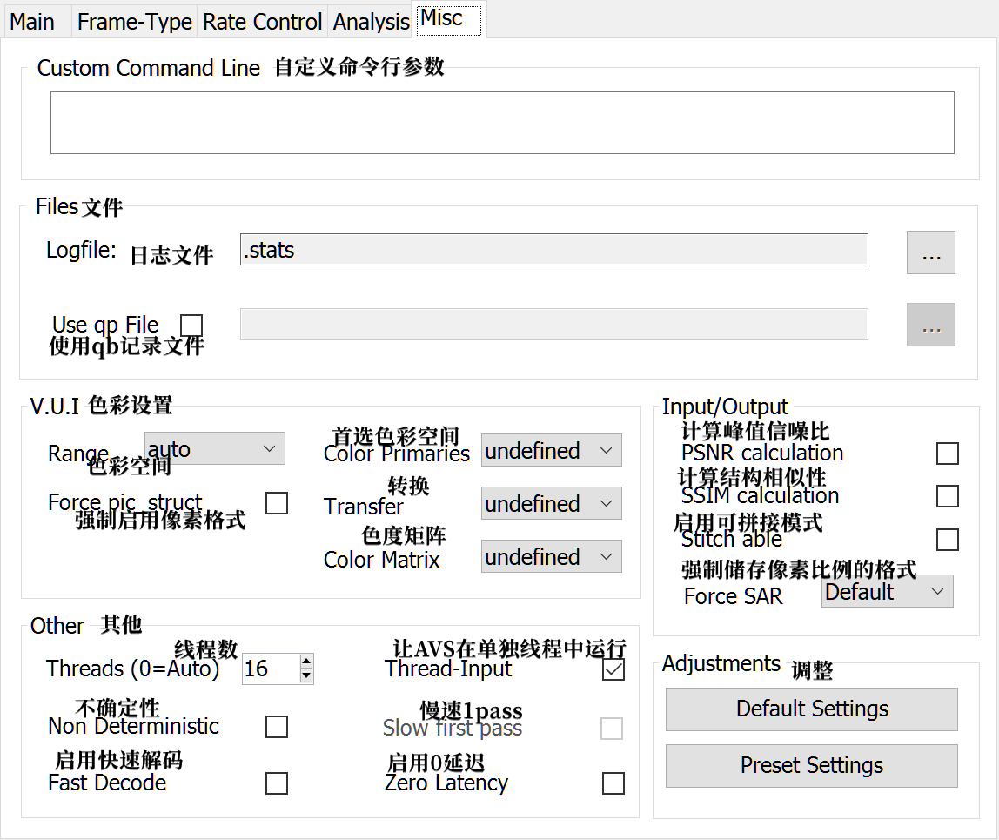